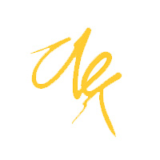
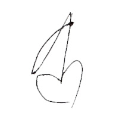
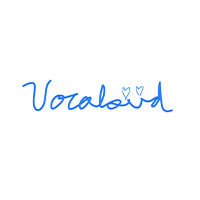
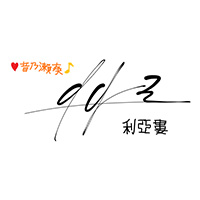
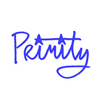
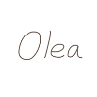
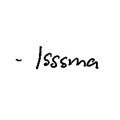
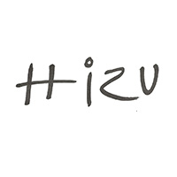
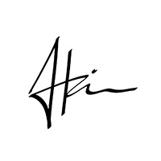

Your cheerful voice has brightened up so many of my days over the past year. Thank you for all of it, and for all the moments to come.
Eldritchreality
So glad you join Hololive! You are very funny and your singing is amazing! I love your dorky gremlin energy and your passion English. It has been a great year and I hope your next is only greater!
Dennis
Dear Kanade
I love you (as a fan)
I fell in love with you right at moment you spoke in your debut stream
"Wow this girl is so loud, damn i love her already", yayyyyy new oshi for me 🤓
I love how you always speaks in 0.75 speed which make it easier for me to understand nihongo
I also adore your singing voice
Namae no nai kabutsu is my favourite cover song of yours
Well all i can say that you are my top tier oshi
I will always be one of your biggest fan, i'm rooting for ya forever
I wish you the best with your carrier and looking forward to what will you achieve in the future 💛

Nghĩa Chính 正義
데뷔 때 부터 보면서 처음에는 살짝 살짝 보기만 했는데 어느 순간부터 멤버십 가입, 생일 굿즈 구매, 방송 매번 챙겨보고 있습니다.
정말 어느 순간 '아 얘가 내 오시구나' 라는 걸 깨닫는다고 해야 할까요 최대한 응원하고 싶어지는 마음이 든다는 것이 이런 거구나 라고 훅 하고 들어오는 느낌입니다.
앞으로도 방송과 팬 활동을 이어나가면서 응원하겠습니다.

더우
오토노세 카나데의 1주년을 진심으로 축하드립니다.
첫데뷔 방송의 범상치 않은 움직임은 여러 사람들이 눈여겨 봤으며, 아마 가장 큰 인상을 줬던거 같습니다.
비록 외국어를 못해서 주로 키리누키쪽을 보는것이 주 이지만 수요일의 노래방송은 큰일이 있지 않으면 항상 듣고 있습니다.
또한 커버곡 홍보가 밈처럼 자리 잡혔을때 여러번 들었으며, 지금도 간간히 노래 틀어서 듣고 있습니다.
이 글을 볼 쯤에도 많이 더울지도 모르겠지만 더위먹어서 몸고생하지 않았으면 좋겠습니다.
앞으로도 많은 커버곡과 많은 방송, 그리고 많은 굿즈들을 발매하며 승승장구하는 오토노세 카나데가 되었으면 하는 바이며 또 홍보할때 이마에 사진 붙이는 그 장면을 다시 해줬으면 합니다.
d와f
재밌는 방송을 보면서 힘을 얻고 있습니다.
쉬어가도 좋으니까 포기하지 말아주세요.

코이노맛시루
귀여운 카나데쨩 1주년 축하해요!
카나데를 볼 때 항상 기특하고 대견하다는 생각이 먼저 들어요.
저는 평생 카나데처럼 열심히 노력하진 못할 것 같지만 그래서 더 응원하는 마음을 가진 채 지켜보게 되네요.
앞으로도 건강하게 오래 봤으면 좋겠어요. 부디 순탄한 활동이 되길 바랍니다.
빠독이
항상 잘 재밌게 보고 있어요!
밝은 갸핡을 볼 때 마다 힘이 나요!
앞으로도 많은 갸햙을 보고싶어요~
루환
KANADE SENPAI!!!
GENKI YA NE????!!!!

A_Vocaloid_Nerd
配信を見ると元気が貰えます！
普段はふざけていても歌に関してはとてもストイックでかっこいい面もあり見ていると自分も頑張ろうってなります
曲も全部好きなのでこれからも色んな曲を聴けることを楽しみにしています！
kororokoro
Congratulations on your first anniversary in Hololive, Kanade! I love watching your wonderful karaoke and fun Minecraft streams! Wishing you the best on this special day and and I look forward to seeing both your 3D debut later this year and your first Holofes appearance in 2025!
Deadbeat508
yt で音楽を聴いていた時に出会いました
声もすごくいいし歌も上手い
それからハイライトを見ました
面白い人、歌が上手い人、二面性のある人
彼がもっと自信を持てるようになることを願っています
培培
奏さん、VTuber活動でいくつかの壁にぶつかっているようですが、どうか気を落とさないでください！
奏さんの成長はみんなが認めていますよ。あなたが誕生日記念に歌った「奏」は本当に天使の声でした！
こんなに素晴らしい歌声はきっと多くの人の心を掴むことでしょう。
自分の歌声を信じてください！きっと成し遂げられます。
あなたは新しい世代の歌姫になるのですから。
ここで一周年おめでとうございます！
KaiKai
카나데!!
접때 일러패스 못간다고 하소연했던 오마에라 임다ㅏ 일어를 못해서 생방송은 잘 못 보지만 키리누키로 항상 잘 보고 있어요!!
또 커버했던 카나데(노래)는 넘 좋아서 매일 2번 씩 듣는 중 ㅋㅋㅋ 항상 귀여운 방송 고맙구 다음에 한국 오면 꼭 보러 갈게요오 아핡!!

강아지는아르아르아르
Hello Kanade! Happy 1st Anniversary!!
Thank you for your hard work in every stream and for the entertainment you have brought. I am really amazed by your beautiful voice in every cover and karaoke streams. Really glad and appreciate that I have watched your Passionate Duelist clip from your debut and started watching and supporting you ever since. To more Haiyaa and UIEEEEEE in the future. Will support you until the end!! GAHA~~
naldo
Dear Kanade, Congratulations on your birthday anniversary !!!!
I personally enjoy a lot of your covers you have done along with regloss. Especially Kaibutsu and daybreak as my personal favourites. With your great voice , you have breakthrough a lot with the strength of your angelic voice that definitely makes me motivated to stay and continue watching your content . Although you do have kusogaki moments , its a fun time to watch kanade stream especially when trolling viewers or fellow holomems.
Also hearing you learning about living alone has also put into perspective , perhaps some relatable moments even . Stand strong and keep yourself healthy. And to see you another year!!!

Windrunner
Hi kanade! how are you today? hope you still good while reading this massage. First of all. Happy 1st anniversary! I still can remember when you debut, you made some joke, play ygo bgm even you never played before and your singing is really good. so I made a decision to follow you. the more I follow you, the more I discover the interesting part of you.
I know that you working hard for us. and everyday isn't a good day. sometimes there's bad day that make you want to cry. What I want to say is....
....We're here. Let us pat you. the reason is simple...
.... cause we love you kanade.
In one day, when you're at stage with your senpai at holoConcert, we will be there for you.
you can do it.
also keep your best smile. because I want to see your best smile on stage
Sleeping Marnie
Konnose dear Kanade-Chan 👋 ehhhh I'm not good in stuff like that, but happy 1 year anniversary🎉🎉🎉 You're "Just talking" stream on the 21th of July were memorable, it kinda touched my heart💛 thank you and greetings from your German Omaera
Ayanami94😈
奏ちゃんこんにちわ！これわ初めで日本語で書くのです。最近の絶絶絶絶対聖域わめちゃかっくいでした！初めて見た時わ初配信だった、君の声と、アホの子のBGMと、いつも笑ってる顔がとっても好きでした。ぼくわいつも応援しています！
ihsfeo
こんのせ！レインと申します！1周年おめでとうございます！
ボカロ曲が好きだから奏さんの「Daybreak Frontline」うたみたを聴いておまえらになりましたよ！配信を見ることがよく出来なくて少し辛かったけどおまえらになるのは本当に嬉しかったんです。一番忘れられない瞬間ならやはり奏さんのプロセカの配信で参加出来た事です。その時は初めて推しとゲームしたので子どもみたいに喜びました。それだけでなく、実は私があずき先輩の開拓者だから、コラボ配信があって感激すぎて泣いてしまいました草。奏さんのおかげでコンフォートゾーンを過ごして新しい事が出来てありがとうございました。
改めて1周年おめでとうございます！これからも応援してますよ！！
biaso01
Uiii happy debut anniversary Kanade! I started watching you because you do karaoke streams regularly, I like your voice! I hope I can watch and support you for years to come! GAHA!
umeumenova
Congrats for debuting one year anniversary to you and ReGLOSS, Kanade! As a female viewer who started to know hololive around 2020, even though my time getting to know you wasn’t very long compared to my whole Vtuber journey, but your presence has really gets my passion and joy back for watching streams. I really like your "gaha"s, how you call us Omaera, and also your interactions with the other members of ReGLOSS. I really love the feeling of this small group.
I also really enjoy your cover songs; they're amazing. I love your DAYBREAK FRONTLINE too, and still use it as my morning alarm. Of course, the song during your singing streams are great too! But I hope you don't push yourself too hard to stream frequently. After all, to achieve your dream as a singer, you need to take care of your voice, especially after being sick recently. Anyway, I hope you can keep streaming and singing to get your dream caome true! As an Omaera (音の勢), I will always support you! 奏ちゃん、配信も、歌も、いつもありがとうございます！ずっとずっと応援するぞ！
WiTo
생방송, 커버곡, 키리누키 등등 항상 재미있게 보고 있습니다. 한결같은 잼민이 포지션 귀엽습니다. ㅎㅎ
그리고 매년 이런거 할 수있도록 맛있는거 우메우메하면서 건강하게 오래 방송해주세요.
ProjectMiku39
From discovering her by AHO3 clip and rushing straight to listening to her singing I decided to get back into hololive again. Thanks to her cover song choice and in general her tone of voice she quickly became my oshi. I love this blonde ksgk very much.
Nifu
個性很可愛!、唱歌很好聽!、很有挑戰精神，對待自身事物很認真、還有很多優點的小奏，是我生活前進的動力之。，從2020開始接觸vtuber的我，第一次有了推!我被你可愛的個性所吸引，被你天使歌聲而留住，這樣的小奏讓我開始有了推。希望小奏能一直做自己喜歡的事情，我會一直應援你的!!ぷにぷにでも応援してます!奏ちゃん今日もかわいい~!一周年恭喜!!
安-An
Hi Kanade, thank you for your hard work and music, and congratulations that you reach one year milestone. Sorry that I can only use English because I don't know 日本語 much. The first your stream I tuned in was "sing Shunkan Heartbeat 100 times" stream. When I heard about that stream I was a little bit worried and felt I should give some support by tuning in so I opened the stream during my work. Since then, I started listening your songs and karaoke streams. I enjoy your vocal and the expression for the songs. I can feel the passion you have in singing. Thanks for the covers you have sung. And I really look forward you will have your first original song, a song expressing your feeling, a song only belong to the one who is 音乃瀬奏. Carry on and never give up on your dream. May see you around! --- a fan of Yours
okme
Kanade-chan,
Congratulations on your 1-year debut! Every day with you has always been so fun and exciting. Please continue to work hard and make your dreams come true. I will be supporting you the whole way. Please don't overwork yourself, and be sure to take care of yourself and take a break when you need to. Stay healthy, get plenty of sleep, and be sure to have delicious umeume! I look forward to making new memories with you. Thank you for all of your hard work.

Primity
奏さんを見るたびに、ガキの頃の自分を思い出します。
どうかその純粋さを失わず、自分の夢を追い続けてください。
いてくれてありがとう、ガkーー奏さん。
猫月斎
奏ちゃんこんにちは、おまえらのOleaです
デビュー一周年おめでとう！
ずっと奏ちゃんの歌声が大好きで、歌ってみた全部超好きで、毎回の歌枠もすごく堪能させてもらっています。奏ちゃんと過ごしたこの一年間で、奏ちゃんのどんどん進化していく歌声を聴いていると、めっちゃ嬉しいし、感服しています。奏ちゃんの声を聴くといつも元気が出ます！これからもずっと応援します！

姜敏Olea
Konnose!🎹✨
Hello Kanade! Congratulations for your 1st Anniversary!
I have been your fan since you start debuting. You have a very beautiful, cool, deep, and full of emotion voice that could move everyone's heart. From that day I know that you have a great potential to be big!
You have made a lot of great song covers and the one that I really love are "My Dearest" and "奏", both of that song really shows how great your voice control are, and I love it.
To be honest, I have multiple oshis: suisei, kagura nana, fauna, zeta, and you. *I guess it's not important*. I think you have the same of voice as suisei, what I mean is I can hear your endless effort to make your singing better day by day, and that's what will always move peoples heart.
Lastly, if you ever think that your effort has not paid off or your plan has ever not gone as good as you think, just remember that we otonozei will always support you no matter what, because we believe that you can do it. (Because that's what you thought us)
I'm sorry for any bad english, I'm Indonesian.
Once again Congratulations!
Otsunose~🎹✨
Icedicey
Kanade, congratulations with your anniversary! Thank you for your hard work! You've been doing so much song covers and singing a number of original songs with ReGLOSS. It's always a pleasure to hear your singing and just hear your voice on streams despite language barrier. Looking forward to your future perfomances and achievements in your craft!
dimvssometimes
奏ちゃん, 1周年おめでとうございます!
私はkaigai-nikkiなので、今DeepLを使って翻訳している 草。まだ1ヶ月以上 配信見始めたばかりですが、クリップをたくさん見て、本当に楽しいと思いました。5月のマイクラの配信で、何でも怖がって30回も叫んだり、青くんに毎回「キモーイ」って言ったりしたのが大好きです www。奏ちゃんのクッソガキな性格が本当にめちゃめちゃ面白くて、たくさん笑って、奏ちゃんをフォローするようになりました。でも、私がファンになったのは、奏の歌い方です。最近は Regloss のオリジナル曲だけでなく、奏のカバー曲もノンストップで聴いています。君の歌はとても美しくて、言葉にできないほど心に響きました。一番驚いたのは、君が瞬間ハートビートを100回歌ったことだ。「クレイジーだ」と思ったが、君は本当にベストを尽くして、それに本当によくやった。私も歌の勉強をしているのですが、歌を歌うと喉が痛くなるのはわかる。でも、奏は本当にやり遂げた。奏がホロライブに参加してくれて、奏の歌の才能を知る機会があったことに本当に感謝します。一周年ということで、これからの旅も頑張ってください。ホロライブも大きな会社になって、本当に大変かもしれないけど、今まで通り、前向きに頑張ってください。
改めて 1周年とおめでとうございます
これからも応援しています！
シロキ
かなで、1周年おめでとう！

Kater
Hi Kanade! Happy Anniversary! Thanks a lot for always giving joy and fun everyday. Your streams are something I always look forward too. Not to mention all your amazing Singing and song covers. I hope you're having fun, and thank you very much for sharing your time and energy with us. Here's to more years of fun! Thank you!

isssma
Kanade ! Congrats on your first anniversary !
I've started following you because your singing since your debut, you really were incredible already back then and you keep on becoming better !
All your covers are pretty much stuck in my head everyday and I still continue to loop every of them because of how good they sound !
Your streams always brighten my day whatever you are playing or doing, and it will surely to continue to be that way for a long time !
I wish all the best for you and will continue to support you until the end !!!

Hizu
Kanade, congratulations for 1 year! I love listening to your covers and tuning in to your streams! You have godly singing voice and the Kanade noises when you stream are very entertaining! You are an amazing singer and funny and cute!
Kanade is tenshi.
Kanade is GAHA.
Nanchukotta!
Peako
Thank you for all the hard work you put into this year! All of the covers were great and your streams brought me lots of joy
kirikiri
Hi Kanade! You are very cute and funny, and I also love your passion English and singing!
Happy One Year Anniversary and many more with lots of laughter!
Also, please tell us who the heck is Stephanie. I'm still perpetually confused over this. LOL
seta
Kanade you're a shining star and you shine a lot and i'm really happy and proud of you and your work, although my Japanese is almost non-existent every morning I enjoy watching your streams every time i can, i really love every cover you do, if you ask me my favourite cover it's all of them...,thank you for being part of this community and i am verry happy to have found you kanade, per la mia stella cadente, grazie di tutto, Kanade

Ahria
Happy Anniversary!!!
Thanks for all the songs and streams this past year, I really enjoyed them.
I first discovered you from Shunkan Heartbeat and was blown away at your solo part.
At that time I just started learning Japanese and loved how easy it was to understand you. Now you have become the main reason for me to be better at Japanese.
I hope that even after 2000 years people will still enjoy your songs!!!
Esaiy
こんのせ！
First of all, congratulations on your 1st debut anniversary!!
The beginning of my love for Kanade was when I listened to Shunkan Heartbeat. I actually didn't know Hololive before, but spotify randomly selected this song for me and it stuck in my mind every time I listened to it repeatedly. It made me wonder who the artist of this song was, and when I tried searching for it, I found ReGLOSS and found out that she was a Virtual YouTuber. At that time, I was curious, so i watched some of ReGLOSS's cover clips, but I didn't decide to follow they because I didn't know much about VTubers.
But not long after, the algorithm showed me a lot of ReGLOSS's clips. At that time, I was in my university's Internship Program. And because my timezone and Kanade were not that different, I saw that Kanade was live streaming UNDERTALE and that was the first live stream I watched.
Before I knew it, I always had Kanade's karaoke playing in the background while I work or study. To me, Kanade has always been a singer from the beginning until now, even though Kanade also streamed games. But when it comes to music, I admire Kanade's dedication, especially after learning that you paused your studies and moved to Japan to work with Hololive to pursue your dream of singing. I find you incredible, especially since we are of similar ages, and I can relate to the fears and loneliness of being in an unfamiliar place. That's why deep down I respect and want to support Kanade for daring to follow your dreams.
Additionally, I'm starting to learn Japanese again because of Kanade. Actually, before I met Kanade, I was interested in Japan and had started learning Japanese. But because I was busy with university and wasn't good at the language learning skills, I felt tired and lost my drive to learn Japanese, so I eventually gave up. But when I listened to Kanade speak Japanese on live streams, it reignited my passion for learning the language. I enjoy listening to Kanade and trying to understand what she says. Even though they were simple sentences or short sentences, it made me feel like I was learning a language as a hobby, and I didn't feel as tired as I used to.
At First, I was captivated by Kanade as a singer, but I also enjoy you as a streamer. When you whined because game didn't go your way or when viewers tease you, I feel the urge to comfort you. Or when you acted naughty with the other senpai in hololive, you were also really cute. Watching Kanade as a streamer feels like I have a younger sister, while when you sing or talk about music, you become someone truly remarkable to me. Despite the differences in these two aspects of your side, together become Otonose Kanade, the person I like.
Even though I might have gotten to know you later than others, and there are still many things I don't know about you because I don't understand Japanese, I still want to get to know Kanade better from now on. So let's work hard together, whether it's 1 year, 2 years, or however many years go by, until all of Kanade's and my goals come true. Until that day comes, I'll continue to support you!
TEA.P
Happy 1st Anniversary from your debut Kanade!! I been watching you from debut and highly enjoyed to most or almost all covers and group songs you have released so far. I watched watching you as you have a very bubbly personality and your outfit looks so cute. I will continue to watch your streams as an Omera!
Sloth
카나데라는 사람을 만나고부터 내 삶이 조금 더 성장했어요. 처음엔 그저 즐거워서 보기 시작한 키리누키에서, 지금은 생방송도 보게 되며 맴버쉽 가입도 하게 되었습니다. 카나데를 만나게 되어 너무 행복합니다. 앞으로 행복한 방송 해주세요!
양록
Kanade, I love the way you sing, the covers you make, and the streams that you play. It brightens my day being able to listen to your music, watching you play for hours on stream, or watching funny clips on you online. Your personality is very vibrant and the contrasts between how you sing and how you talk is absolutely hilarious. Don't worry, I still keep you at 1x talking speed ̶m̶o̶s̶t̶l̶y̶! Keep working hard and get that 500K, I will be rooting for you! がんばれ!
Nadeko
奏ちゃんんー！！大好きですー！！奏ちゃんのデビュー配信からずっとみてます！！
奏ちゃんに出会うまえの僕と今の僕はまるで別人でした。
僕は奏ちゃんと出会ったから人生が変わりました。奏ちゃんの歌声と元気さは何度も僕を救ったのです。もし僕は奏ちゃんに出会わなかったとしたら。。。それがどうなるかもかんがえたくないです。初めて人を押したくなるていう気持ちになりました、そう感じさせたのは奏ちゃんでした、初推しです！毎日covers聞いてます！奏ちゃんの歌声大好きです！
（この部分はどうやって日本語で書けばいいかわからない）
If you are reading this, I just want to let you know that you've made my life so much more colorful and fun！. And I'm sure that many other people also feel the same way as me.
辛い時や悲しい時、奏ちゃんの声を聞いて、いつも元気させられました。
奏ちゃんも辛い時や悲しい時が来ると思います、そうなっても、奏ちゃんが多くの人に笑顔を与えたことをに知らせたいのです。奏ちゃんならなにも超えられるとおもいます！いや、絶対何でも超えられます！ 奏ちゃんの夢叶うように願っています！
これからも頑張ってください！いつも応援しています！
Omaera Clips